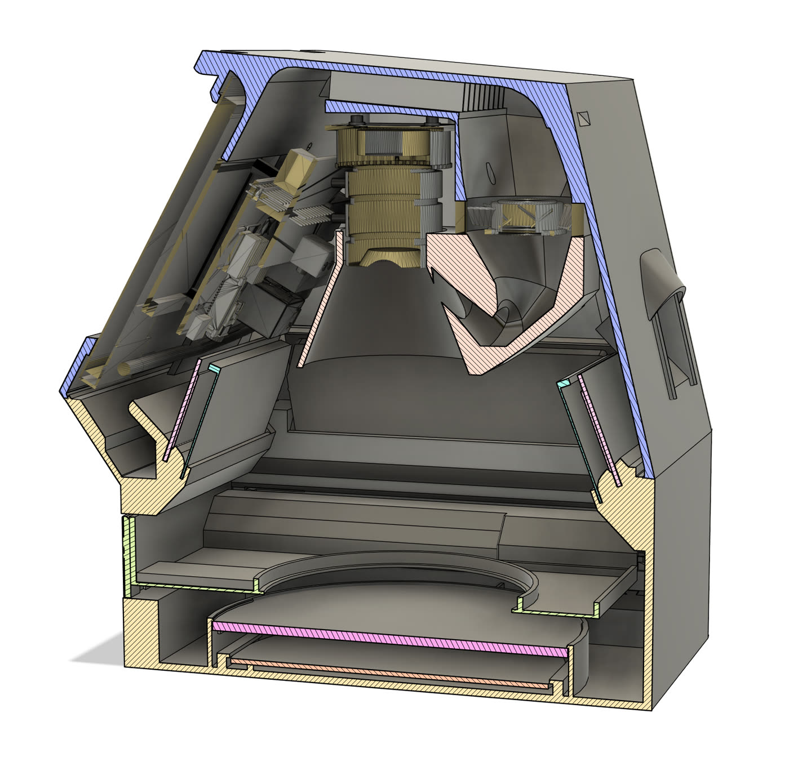
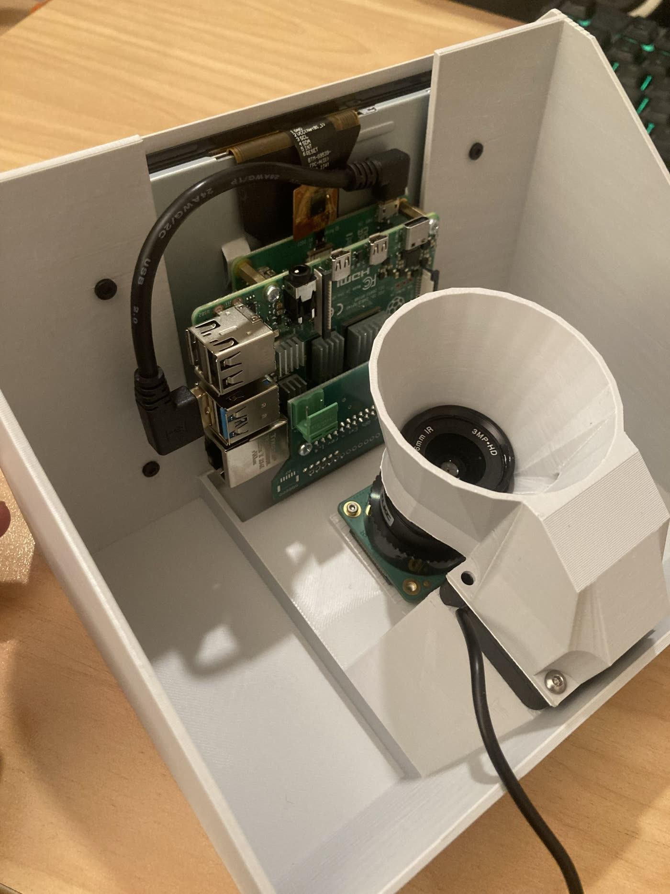
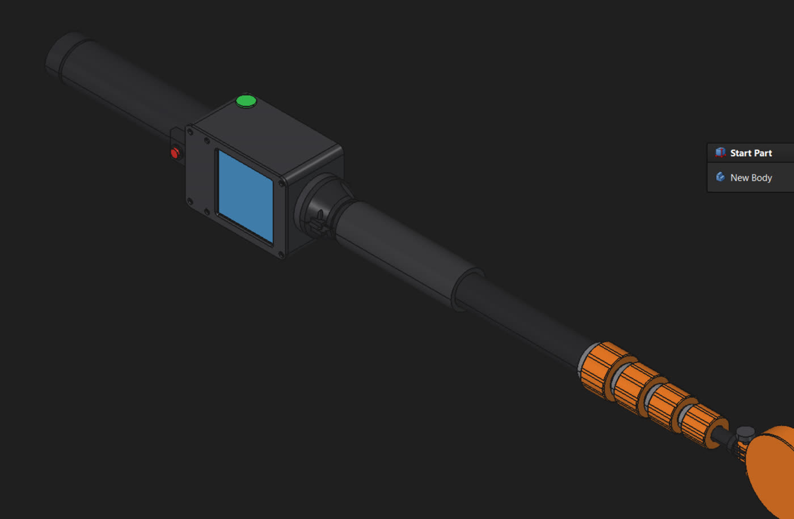

Jupiter Reader V2
A tougher, splash-proof, fog-free rebuild of the DairySmart plate reader, now at final test print. Next in the queue: the telescopic RFID wand.
- Design
- Formtech design team, Christchurch
- Files to Formtech
- Tonight (3 Nov)
- Production candidates
- ASA (FDM) and Nylon 12 (SLS)
- DairySmart review
- Ben, end of this week
- Up next
- RFID wand once Jupiter is signed off
One link in the DairySmart mastitis workflow
The reader logs every sample and photographs each Jupiter plate for DairySmart's AI software. It runs in SVS Laboratories today and is designed to sit on-farm for in-season reading, so it has to survive a milking shed, not just a lab bench.
Fixing what broke in the field
V1's screen was held by its thin glass panel, so every flex of the PETG frame twisted the glass. Add lens fogging over warm plates and a shell that was hard to keep clean, and the brief for V2 wrote itself.

Screen mounted properly
The display is now fixed by its mount, not its glass. The frame is added protection only, and both mount and frame have been thickened. The screen is tilted toward the operator.
Demisting fan shroud
A fan shroud over the camera pulls air across the boards and screen, keeping the electronics cool, and pushes a stream of air over the lens to clear condensation. Tested over boiling water (see below).
Splash-proof shell
Sealing is now good enough that a glass of water can be poured over the screen. Mini vents and a bevel on the back have been added.
Tray that can be printed clear
The retaining clips moved from the tray to the lower shell, so the tray no longer has to flex. That means it can be printed in clear resin, and the insertion connector has been redone to suit.
Simpler assembly, standard screws
Build order is screen, then camera, then shroud. Shroud screw holes were resized to take standard screws. A visual diagram is going on the lid tutorial so it works for non-English speakers.
RFID chip holder
Dedicated holder on the right-hand side of the shell, so the reader can pick up the tag on each plate as part of the sample-to-result chain.
Fan off vs fan on
Same unit, same screen, both dishes carrying freshly boiled water. With the fan off the camera feed hazes over within seconds of the warm plate going in. With the fan on it fogs faintly at first, then clears and stays sharp.
What's inside, and what it's printed in
Formtech will run a set of shells in each candidate material and price a per-unit cost for both before DairySmart chooses.

Two production routes being costed
| Route | Material | Why |
|---|---|---|
| FDM | ASA | Stiffer than PETG (less frame flex), easy to clean, UV-stable for a shed. |
| SLS | Nylon 12 | No support marks, strong thin walls. A laser-sintering-specific version of the model is being prepared. |
| SLA | Clear resin | Tray only, so the plate and its RFID tag are visible without flexing the part. |
Weights have some wiggle room: the solid sections on the sides are still to be hollowed out in CAD, which brings both material cost and print time down.
Telescopic RFID wand
Design is ahead of schedule. The test telescopic assembly is printed and dialled in, with a demo print to show alongside the new Jupiter. It starts in earnest once Jupiter is signed off.

- Collet-nut sections tighten like a boom mic, so the wand sets and holds at any length.
- Carbon fibre tubes, 1.5 mm walls, to be sourced through Killwell once specs are confirmed.
- Clean wiring: the rod runs through to the back of the handle, with a printed part around the handle to route the cables.
- No wobble in the test part: no shakiness, bending or droop at full extension.
- Option: 4 sections instead of 5 if tube cost is high, at the price of a little more wobble.
About 15 cm longer than the original when collapsed, in exchange for the full 3 m reach.
| Section | Length | OD | ID |
|---|---|---|---|
| 1 (grip) | 690 mm | 35 mm | 32 mm |
| 2 | 650 mm | 30 mm | 27 mm |
| 3 | 650 mm | 25 mm | 22 mm |
| 4 | 650 mm | 20 mm | 17 mm |
| 5 (tip) | 650 mm | 15 mm | 12 mm |
Where we are
- V1 failure analysisScreen breakages traced to glass-held mounting and PETG frame flex.
- V2 CAD and first test printsNew screen mount, fan shroud, tray and clip redesign, RFID holder, splash sealing.
- Demister provenFan on vs off over boiling water, lens stays clear.
- Final test print and file hand-overReprint running; tray tuned for resin; files to Formtech tonight.
- Production sets in ASA and Nylon 12Formtech prints one set of each and costs per unit.
- DairySmart review and sign-offBen to check towards the end of this week.
- RFID wandCarbon tube sourcing via Killwell, demo print, then handle and electronics.